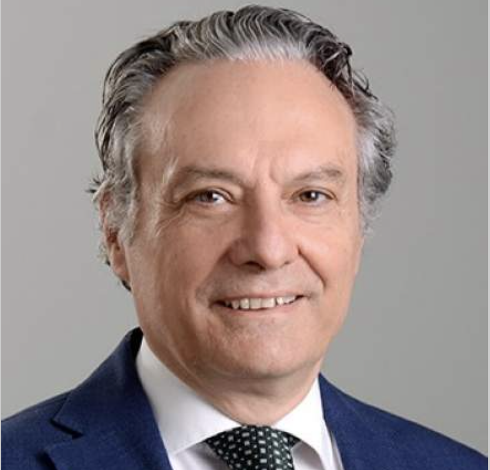
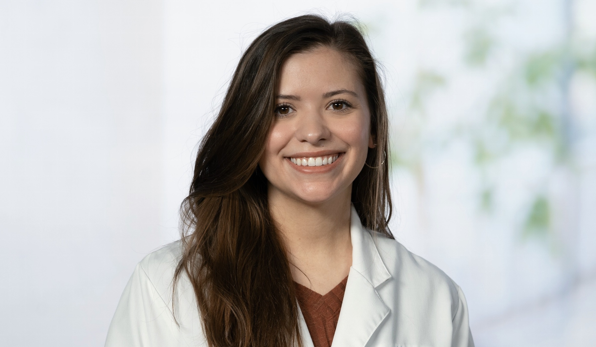
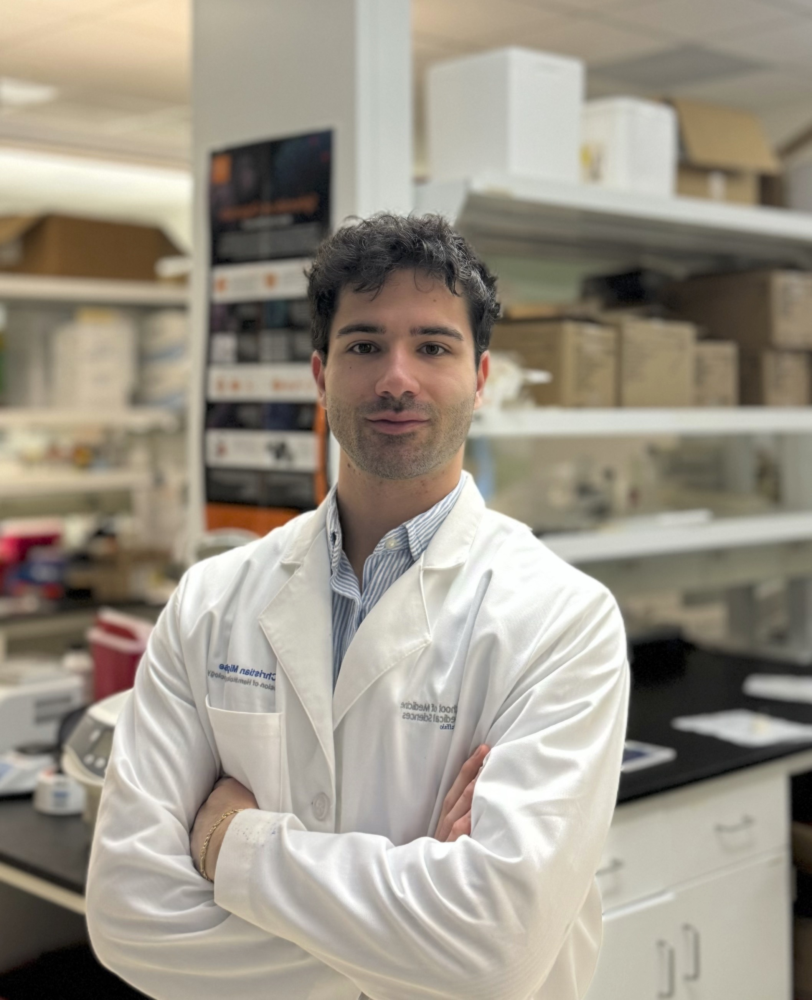
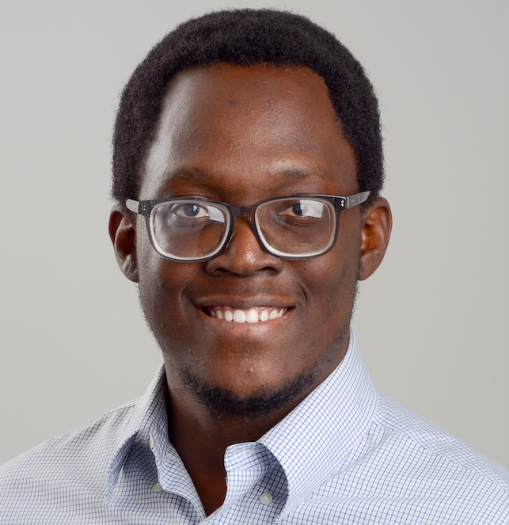

Current Members

Roberto Pili, M.D.
Principal Investigator
Roberto Pili, MD, is associate dean for cancer research and integrative oncology, and professor and chief of the Division of Hematology/Oncology in the Department of Medicine.
As associate dean, he is responsible for building the academic infrastructure for innovative and collaborative cancer research at UB and on the Buffalo Niagara Medical Campus, particularly in the areas of immunotherapies, drug development and delivery, epigenetics and lifestyle-dietary interventions. He is the founder of the UB Cancer Research Consortium.
An internationally recognized expert in genitourinary malignancies, Pili specializes in research on the role of epigenetic modifications in overcoming drug resistance and modulating response to immunotherapies. His laboratory is also studying the impact of dietary interventions as adjuvant tools in patients receiving cancer treatments.
Pili holds several patent applications and is conducting several investigator-initiated clinical trials for the treatment of genitourinary malignancies. His laboratory is based at the school’s Clinical and Translational Science Institute, and his work is funded by grants from the National Cancer Institutes and the Department of Defense.
Pili received his medical degree from Catholic University School of Medicine in Rome and completed fellowships with National Institutes of Health’s National Institute on Aging in biological chemistry and Johns Hopkins University in medical oncology. He has published 200 articles in peer-reviewed journals and serves as a reviewer for several medical journals and grants study sections of the National Cancer Institutes and the Department of Defense.
As associate dean, he is responsible for building the academic infrastructure for innovative and collaborative cancer research at UB and on the Buffalo Niagara Medical Campus, particularly in the areas of immunotherapies, drug development and delivery, epigenetics and lifestyle-dietary interventions. He is the founder of the UB Cancer Research Consortium.
An internationally recognized expert in genitourinary malignancies, Pili specializes in research on the role of epigenetic modifications in overcoming drug resistance and modulating response to immunotherapies. His laboratory is also studying the impact of dietary interventions as adjuvant tools in patients receiving cancer treatments.
Pili holds several patent applications and is conducting several investigator-initiated clinical trials for the treatment of genitourinary malignancies. His laboratory is based at the school’s Clinical and Translational Science Institute, and his work is funded by grants from the National Cancer Institutes and the Department of Defense.
Pili received his medical degree from Catholic University School of Medicine in Rome and completed fellowships with National Institutes of Health’s National Institute on Aging in biological chemistry and Johns Hopkins University in medical oncology. He has published 200 articles in peer-reviewed journals and serves as a reviewer for several medical journals and grants study sections of the National Cancer Institutes and the Department of Defense.

Sabrina Orsi
PhD Candidate
Sabrina has been a Ph.D. student in the Pili Lab since 2022 through the Department of Pharmacology and Toxicology. She graduated from Virginia Tech Polytechnic Institute and State University with B.S.’s in Biochemistry and Microbiology in 2020. Before coming to Buffalo, Sabrina worked in a Neuroscience lab as an Undergraduate Research Assistant. Sabrina’s research interests include dietary interventions and metabolic based therapies. Her thesis project is focused on characterizing metabolic vulnerabilities in renal cell carcinoma with in vitro and ex vivo work in patient derived cell lines and xenograft models.
Cedrick Ball
Administrative Assistant
Cedrick started as an administrator in the lab in August 2023. He holds a bachelor’s degree in biology with a focus on human health. As a small business owner with a strong logistics background, he is dedicated to making the operations of research run as smoothly as possible from planning to patient.

Christian Migliarese
PhD Student
Christian is a Ph.D. student in the Department of Pathology and Anatomical Sciences, where he began his doctoral studies in Summer 2024. He holds a bachelor’s degree in biotechnology from the University of Cagliari and a master’s degree in biotechnology and molecular biology from Vita-Salute San Raffaele University in Milan. Christian’s work focuses on elucidating epigenetic mechanisms underlying resistance to receptor tyrosine kinase inhibitors (RTKIs) in clear cell renal cell carcinoma (ccRCC). By identifying the epigenomic signatures linked to treatment resistance, he aims to develop therapeutic strategies that reprogram tumor cells to restore drug sensitivity. He is also involved in the development of small-molecule inhibitors targeting oncogenic drivers in translocation.

Otega Oviri
PhD Student
Otega is a Ph.D. student in the Department of Pathology and Anatomical Sciences where he began his doctoral studies in Fall 2025. He holds a bachelor’s degree in Biology from the University of Abuja, Nigeria and a master’s degree in biology from Georgia State University, Atlanta.
Otega’s research interests include how dietary restriction strategies, in combination with immunotherapy, shape immune function and the immune landscape in renal cell carcinoma (RCC). He aims to understand how nutrient modulation can enhance antitumor immune response and improve therapeutic outcomes.
Otega’s research interests include how dietary restriction strategies, in combination with immunotherapy, shape immune function and the immune landscape in renal cell carcinoma (RCC). He aims to understand how nutrient modulation can enhance antitumor immune response and improve therapeutic outcomes.